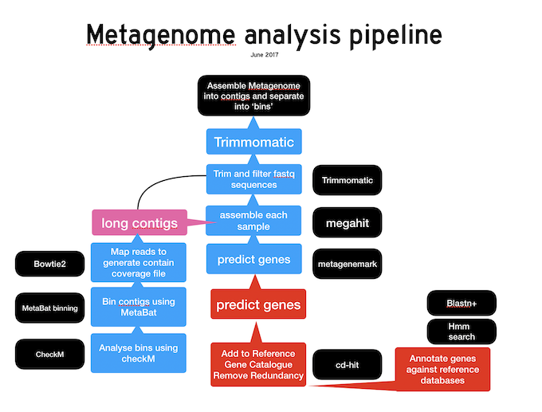

Genome Assembly Workflow - Week 2
Overview
Teaching: 10 min
Exercises: 40 minQuestions
How to develop a metagenomics analysis workflow?
Objectives
Develop an outline and examine the key points in a genome assembly and annotation workflow
Describe in detail the quality measures of your assembled contigs
Begin to analyse you assembled metagenome using binning, mapping and database comparisons
Use shell tools to evaluate the results of your analyses
Completed Metagenome assembly, illumina Paired end sequences
During the first class we trimmed and filtered a pair of sequence files .fq.gz in fastq format.
We used tools available in the BASH terminal to rapidly reveal some details about the contents of these
files and we used the program fastqc to provide a detailed overview of the quality and composition of the sequences
within them. Trimmomatic was used to remove any leftover adaptor sequences and to trim the end of sequences
that fell below a quality threshold.
Bioinformatics workflows
When working with high-throughput sequencing data, the raw reads you get off of the sequencer will need to pass through a number of different tools in order to generate your final desired output. The execution of this set of tools in a specified order is commonly referred to as a workflow or a pipeline.
An example of the workflow we will be using for our metagenome assembly, binning and annotation exercises is given below

- Quality control - Assessing quality using FastQC
- Quality control - Trimming and/or filtering reads (if necessary)
- Assemble a Metagenome/Genome or Align reads to reference genome
- Perform post-alignment processes such as binning, gene calling and annotation
Week 1 review: Quality Assessment and trimming
The first step in the Metagenome assembly and annotation workflow was to take the FASTQ files received from the sequencing facility and assess the quality of the sequence reads.
A refresher on the FASTQ format
Although it looks complicated (and it is), it’s easy to understand the fastq format with a little decoding. Some rules about the format include…
| Line | Description |
|---|---|
| 1 | Always begins with ‘@’ and then information about the read |
| 2 | The actual DNA sequence |
| 3 | Always begins with a ‘+’ and sometimes the same info in line 1 |
| 4 | Has a string of characters which represent the quality scores; must have same number of characters as line 2 |
We can view the first complete read in one of the files our dataset by using head to look at
the first four lines in any of your fastq (or fq) files.
$ head -n 4 *L001_R1.fastq
@D00626:337:H5VJHBCX2:1:1106:1162:2154 1:N:0:AAGAGGCA+GTAAGGAG
GACCTAAGATACAAATCTTAGAATCAAGATCATGCTCATCTTTTAGCTTTGTTTGGATATTATAACTCATTCCGCTCCTGTGCAAACACCAGTTGTCAGAGCAATCGCTGATGATCTTCTTCCCATGAC
+
DDDDDIIHIIIIGIIIIIIIIIGHIIIIIIIIHIIGHIHIHHHIHGHIHIIHIHHGIHIIIIIIIIIGIIIIIIIIIIIIEFHHHHIIIIFIIEHHHFEHHFHHIEHIHIIIHIIIIHIHHIGFHI?HG
Now compare a reverse read in the R2 file.
head -n 4 *_L001_R2.fastq
@D00626:337:H5VJHBCX2:1:1106:1162:2154 2:N:0:AAGAGGCA+GTAAGGAG
GCTTCAAGTCATGATCGAAACTTTATTATTGAAGTCATGGGAAGAAGATCATCAGCGATTGCTCTGANNNNNNNNNNNNNNNNNNNNNNNNNNNNNNNNNNNNNTNNNNNNNCNNNNNNNNANGATNNNN
+
@BADDIIIIIIIIIIIIIIIGHIIIIIIIHIII?GHIHIIIHIHIHHHHHIHGHHIIIIIIHIIIII#####################################-#######-########8#-8-####
Do you notice the run of Ns at the end where the quality of the sequence was not good.
Picking up where we left off
We concluded the first class by establishing a special terminal session with screen so that the
metagenome assembly program could run without interruption overnight, or over the weekend. Megahit was our
chosen assembly program.
screen -S Assembly
cat mySamplefiltered_*U.fq.gz > mySamplefiltered_12U.fq.gz
/usr/local/megahit/megahit -1 mySamplefiltered_1P.fq.gz -2 mySamplefiltered_2P.fq.gz -r mySamplefiltered_12U.fq.gz -t 4 -o assembly
By now you should have a completed metgenome assembly in the assembly directory (or possibly not?).
Login to your account on the server and recover your screened terminal session.
screen -r
If you have multiple screen sessions detached you may be presented with a list
There are several suitable screens on:
88323.assembly (14/10/18 11:25:56) (Detached)
16277.superfocus (14/10/18 09:53:02) (Detached)
Type "screen [-d] -r [pid.]tty.host" to resume one of them.
If this is the case select which screened session you would like to resume
screen -r 88323.assembly
Let us examine the results
cd assembly
ls
If the assembly completed without error the contents of your assembly directory look like this and it is time to start exploring the output
done final.contigs.fa Intermediate_contigs log
Questions:
What did this assembly program actually do?
How many sequences are in your files?
What information can we extract from the final.contigs.fa file?
How does the quantity and quality of the sequences in your assembled contigs compare to your raw sequence files?
Suggestions
grep -c '>' final.contigs.faxxxxgrep '>' final.contigs.fa | lessxxxxcat final.contigs.fa | grep '>' | cut -f 4 -d' ' | sort -nxxxxtail logxxxx
What is a contig?
A contig (from contiguous) is a set of overlapping DNA segments that together represent a consensus region of DNA.
Assessment of your assembly in more detail
Next we will use quast, a program to produce a detailed summary of our metagenome assembly
/usr/local/quast/quast-4.6.3/quast.py final.contigs.fa
Quast will produce a two reports, one in plain text and one in .html format. View which ever report you prefer and start compiling a table of key parameters describing your metagenome assembly. Use the questions below as a guide.
Questions:
How does the total size of your input data compare to size of your assembly?
How long is the longest contig?
Which contig is assembled from the greatest number of input sequences?
What is the N50? How does your N50 compare with your neighbor?
Solutions
Make a table to track what has happened to the quantity, quality and total length of your sequences as they progress from raw to filtered to assembled.
Key Points
Develop a plan. Evaluate the quality of your processing outputs at every stage
A metagenome assembly combines overlapping sequences into contiguous sections of DNA called contigs
An assembly is an effective way or reducing our data